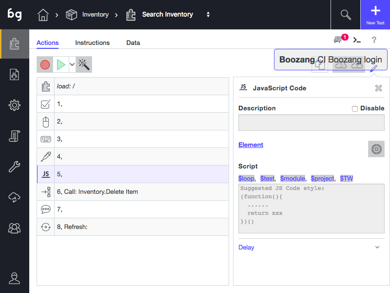

Javascript coding

The Javascript action
Boozang also allows you to execute Javascript directly in the application. This can be very useful when trying to do more advanced things that aren't covered by the set of actions Boozang has out-of-the-box.
The handles
When writing Javascript there are some particularities in Boozang that needs to be respected. In order to access the application window, you will have to use the handle $TW (test window). This means to be able to manipulate the application window document tree (DOM) the user needs to use $TW.document. When referencing the only document it references the Boozang tool window, not the application window.
Using data (variables)
In Boozang you can reference data directly in Javascript. To access data, use the handles $project, $module, or $test, depending on what level the data was added. For instance, to reference a username that was added on the module level, use $module.username.
Trouble-shooting
In order to troubleshoot the application it´s sometimes useful to add debugging code. For instance, to write the contents of the module level data "username" use "console.log($module.username)" to write it to the tool window and $TW.console.log($module.username) to write it to the application window. You can use the Chrome developer tools to easily verify this.
Note: Avoid using $TW.alert() as Boozang interprets this as application popup windows and intercepts them.